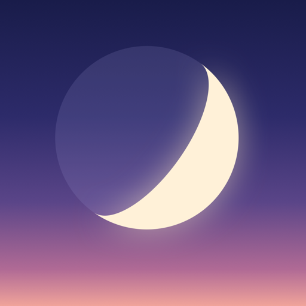

Dusk
Dark mode for Safari · Download on the App Store for iPhone and iPad · Coming to the Mac
Dusk turns every website in Safari dark before it even paints, in colors that look designed, not inverted. Backgrounds darken, text lightens, and links and buttons keep their hue.
Fast by design
Safari applies Dusk's theme while the page loads, so there's no white flash. Dusk works in slices of a few milliseconds, runs nothing while you scroll, and runs no code at all on sites you turn off.
Private
No account, no tracking, no servers: everything happens on your device.
Free, with Pro
Dark mode is free. Dusk Pro is one purchase for iPhone, iPad and Mac: more themes, schedules from sunset to sunrise, per-site tuning, warmth and saturation, image and video dimming, dark PDFs, custom CSS and iCloud sync.
More apps by Colin Sergay
Japa: a mala, rosary and tasbih counter for iPhone, iPad and Apple Watch, with the words of your mantra or prayer in view.
Lamp & Line: the complete Berean Standard Bible, free and offline, with a Psalm, a reading and a prayer each day on iPhone, iPad and Apple Watch.
Vialog: a private injection tracker for iPhone, with your schedule, records, site log, reminders and notes.
Arrival Sky: the stars, the Moon and the planets as they are right now from where you stand, and the sky you were born under.
Sipworthy: a private coffee journal for iPhone and iPad, to rate café coffees, dial in your beans at home and find the cups worth drinking again.
TrueRate: take-home pay after tax, GST and super for Australian contractors on iPhone, and whether a contract is worth taking.
Dawn: Australian weather explained for your day, on iPhone and Apple Watch.
Tally: sales, downloads, analytics and reviews for all your App Store apps at a glance, on iPhone, iPad and Mac.
ElfClean: a Mac cleaner for people who build with AI, finding the space AI tools, models, old node_modules and Xcode left behind.